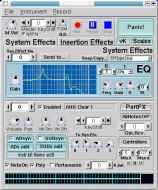
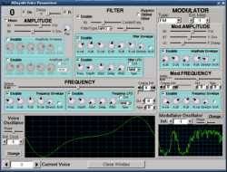
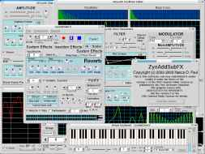
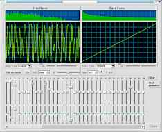

Introduction
ZynAddSubFX
is a opensource software synthesizer capable of making a countless
number
of instruments, from some common heared from expensive hardware to
interesting
sounds that you'll boost to an amazing universe of sounds.
The
project
started in March 2002, and I had written it because I wish to make a
synthesizer
that produces very beautiful sounds, but which is freely available to
anybody
who needs it.
Features of ZynAddSubFX
Screenshots
Audio demos
News
Requirements
Copyright and License
Download
Support
Compilation & Running
Documentation
Bugs
ToDo list
How to contribute
Credits
About me
Features of ZynAddSubFX:
- realtime
synthesizer
- polyphonic
(allows
playing more than one note at once), mutlitimbral (allows
playing more than one instrument at once) synth
- Microtonal
capabilities
with any scale, any number of notes per octave (well... the no. of
notes
per octave must be less than 128) and keymapping
- 3 synthesiser engines:
1) first (called "ADsynth" or "ADnote") is a complex
engine
which makes sounds by adding a number of voices. Each one has filters,
envelopes, LFOs, morphing, modulation (Ring Modulation, Phase
Modulation...
the modulators can have any shape), resonance, etc. Each voice includes
a very powerful waveform generator with up to 128 sine/nonsine
harmonics.
You can use Fourier synthesis or if you don't like it you can
waveshaping/filtering
of functions. This engine includes antialiasing.
2) second (called "SUBsynth" or "SUBnote") is a simpler
engine
who allows to make sounds by subtraction of harmonics of sounds from
white
noise
3) third (called "PADsynth" or "PADnote") is engine that
makes very beautifull pads and other instruments.
<> - Instruments can be
orgainzed
in kits, which alows you to make drum kits or layered(mixed)
instruments;
this makes possible to use more than one instrument for a single part.
It is possible to choose what items from the kit should be processed by
the Part's effects.
- Effects: Reverb,
Echo, Chorus/Flange, Phaser,AlienWah (it's a kind of vocal morpher),
Distorsion(Waveshaping), EQ, DynamicFilter
- The effects can behave
as System Effects or as Insertion Effects; this allows
to
use many effects at the same time. You can put any insertion effect on
any part(or more insertion effects to same parts, if you like so) or
you
can put the insertion effect to Master output (very usefull if you use
the EQ effect). Also, you can have instrument's effect (that is saved
with
the instrument).
- Filters up to 60dB/octave
(or more..); filters can be analogic (LPF,HPF, BPF,etc.),
formant(advanced formant filters) and state variable (SVF)
- Envelopes can have ADSR
(or ASR, etc..) modes or can be free modes (with any shape)
- Many settings has a "randomness"
option, which you can make instruments that every time produces a
subtle
different sound; this produces a very pleasent effect (like analogue
synths
or natural instruments that can't produces exactly same sound twice).
Because
of this, even if it is digital synthesis, it sounds "warm". Listen the
ogg vorbis demos from this page to hear this effect.
- the specifications can
be easily chaged, so (for example) if you want to change the number of
voices or parts to a higher value or to allow a higher number of
effects
at the same time, there is necessary to chage only a single value from
the source file (globals.h) and to recompile the program
- Intuitive and easy to
use User Interface with Clipboard and many objects has user
presets
- Midi support
(supports many controllers) and (if you want) JACK support
- the program has Virtual
Keyboard which let you to use it even if you don't have a real midi
keyboard
- the graphical user
interface can be completely disabled if the user need so
<> - it is a free
program,
licensed under version 2 of the GNU General Public License
- there are over 300
high quality instruments included into the package
- many other features....
It is is impossible to describe all this program's features in just a
page
Screenshots

Audio demos (OGGvorbis):
All these demos are recorded directly from the ZynAddSubFX without
audio
processing with another program (well, exeption cutting/ OGG Vorbis
compressing).
Demo01.ogg(190k)Demo02.ogg(150k)
Demo03.ogg(105k)Demo04.ogg(190k)
Demo05.ogg(170k)Demo06.ogg(50k)
Demo07.ogg(80k)Demo08.ogg(65k)
Source code some
demos(7k)
News:
16 Oct 2005
- Added the full description of the PADsynth algorithm
2.2.1
- made to work with mxml-2.2 (will NOT work on older versions)
- it is possible to remove completely the graphical user interface (e.g. it can run without X). For this you need to modify the DISABLE_GUI option from the Makefile.inc
- added a commandline -L which load a instrument (.xiz) - now it only loads to part 0 (you can use this option with -l to load a master file and after this the option -L to replace the part)
Apr 2005
- participated to LAC2005 as a speaker. Many pictures are here (as 50 MB zip archive of 200+ pictures)
Thanks to ZKM and Frank Neumann.
2.2.0
- the VST version of ZynAddSubFX is removed from the instalation until it will be more stable (hope soon :) )
- now, the instrument banks contains over 300 high quality instruments
- added "Apply" a button from OscilGen window for PADsynth
- added another parameter to ADsynth that controls the amount of all detunes of voices
- adaptive harmonics postprocess
- improved the VU-meter and added a RMS plot
- Dvorak support for Virtual Keyboard
- many bugs fixed and code cleanups
22 Mar 2005
- Thanks to Ben Powers, there is a ZynAddSubFX port for MacOS X at http://bennyp.no-ip.org/zyn_mac/index.html
2.1.1
- Corected a bug that prevented the changing the current part
2.1.0
- Added a installer for windows (thanks to NSIS installer ( http://nsis.sourceforge.net/ ) ). Both VST and standalone vesions are contained in the same installer.
- Added a new user interface for beginners. You can switch the current user interface with that anytime do you want.<>
- All parts, effects, etc. are counted from '1' and not from '0'
- Added the posibility to compile the OSS and JACK support in the same binary (look in the Makefile.inc)<>
- VST host should be able to save all zynaddsubfx parameters into their setups (this is untested)
- Bugfixes and other
31 Aug 2004
- ZynAddSubFX has an official forum at http://www.kvr-vst.com/forum/viewforum.php?f=47
2.0.0
- VST version works (there are some issues/bugs but it works)
- Added a advanced Clipboard and Preset module - now is possible to add user preset LFOs,Envelopes, Effects, Oscillators, Resonances, Filters, etc.
- Completely removed the *.MAS_ZYN formats (masters, instruments,etc) support; use 2.0.0pre1 and 2.0.0pre2 to convert
- Corrected a error to pitch bend on VST plugin (thanks to Krzysztof Korpiela)
- Impoved the PADsynth module
- Because the PADsynth module takes a time to load, the instrument that contains such modules are shown in different colors
- Bugfixes
- Other
04 Aug 2004
- ZynAddSubFX is available as VST plugin (alpha stage)
02 Aug 2004
- ZynAddSubFX got 5 stars (of 5) on SoftPedia and SoftPedia Pick Award.

(click on image to see more)
2.0.0_pre2
- Win32 port
- It works with mxml2.0 library
- Bugfixes and small improvements
2.0.0_pre1
- Added a new powerful synth engine which is called PADsynth, you can make very beautifull pads and even some strange sounds
- Now is used the XML format for all zynaddsubfx parameters(.XMZ for master parameters, .XIZ for instrument parameters and .XSZ for scale parameters).You can import older parameters. All parameters files are compressed with gzip algorithm.
- Some parameters has changed and you might ecounter different sounds that you saved in the older versions of zynaddsubfx
- The instrument banks are no longer single files, but directories that contains instrument .XIZ files (you can organize them even with a file manager). Also, you can use more than 1 banks easily.
- Added a new effect called DynamicFilter that allows you to do WahWah,AutoWah, VocalMorpher and other effects
- Speedups
- Started to write a small sequencer that allows to load and play a midi file from zynaddsubfx (unfinished)
- ZynAddSubFX is available from CVS, too. Please look at the sourceforge project page to get more information ( http://sourceforge.net/projects/zynaddsubfx )
- The waveform generator (OscilGen) has many new parameters :) also if you press the "Shift" key, you can draw the hamonics amplitude/phases
- Many user interface improvements
- You can load a file at the start of the program with "-l" command-line parameter and you can run zynaddsubfx w/o user interface with "-U"
- It is possible to dump all MIDI notes into a text file
- The instruments can contain comments and copyright information in order to encourage sharing of them
- FFT3W library is supported
- More "randomness" options
- Other impovements
- Many, many bugfixes
- Added the full changelog (since I started to write zynaddsubfx), most is in Romanian
- Other things
1.4.3 - added state variable
filters and other types of analog filters
- small UI improvements
- bugfixes
1.4.2 - added full-featured,
advanced formant filters
- added mixer panel which lets you to see/change most important part
settings,
and shows a vu-meters for each part
- you can choose to process the instrument's kit items only with one
Part
effect (eg. you can make a instrument kit that contains a reverberated
piano and flanged strings)
- enabled to launch more instances in Jack
- when is launched first time, it searches for default.bnk_zyn
file
into /usr/share/zynaddsubfx and /usr/local/share/zynaddsubfx
directories (useful for binary packages for Linux distributions)
- bugfixes
1.4.1 - added single mode to
the instrument kit who alows only one item to be played same time
- added "Spectrum Adjust" to the ADsynth oscillator
- added "drum mode" to the instrument, where all midi keys are mapped
to
12tET
- added a parameter to the "440Hz" which make the freq to varies a bit
according to the key pressed (very usefull to toms and other drums)
- (for OSS audio out) if it is launched with root privileges, the synth
will gain realtime scheduling priority
- bugfixes
1.4.0 - added instrument's own
effect (effects that are loaded/saved with the instrument)
- FreeMode Envelopes: all Envelopes can have any shape (not only ADSR)
- Added instrument kits: It is possible to use more than one
instruments
into one part (used for layered synths or drum kits)
- Amplitude envelopes can be linear or logarithmic
- added interpolation on the Resonance user interface
- user interface improvements and cleanups of it's code
- initiated a mailing list to allow users to share patches for
ZynAddSubFX.
Please share your ZynAddSubFX patches and look at http://lists.sourceforge.net/mailman/listinfo/zynaddsubfx-user
for more information about the mailing list.
1.2.1 - improved filter
interpolation
- bugfixes: wav header is written correctly,NRPN works correctly
- added master fine detune (-64..63 cents) and protection of the
fundamental
frequency agains damping (resonance)
- it is possible to swap effects(change the order) or copy them
- started to port it to VST (not functional, yet)
1.2.0 - ZynAddSubFX
is ported to Windows ;-)
- added internal Virtual Keyboard
- added Configuration window
- added frequency tracking to filter
- improved the OscilGen (harmonic filter, RMS normalisation, etc..)
- improved the recorder (uses the WAV file format and it starts only
when
a key is pressed)
- added filter interpolation if the frequency is changed very fast (it
removes some annoying clicks)
- other improovements, bugfixes, speedups and cleanups of the code
1.0.9 - added keylimit
to parts (first note priority)
- you can use multiple filter stages in order to make very steep filter
rolloffs (eg. 48 dB/octave)
- ADsynth - added noise mode and you can make fixed frequencies; added
the "Punch" parameter
- added an external program "Controller" which enables you to use the
mouse
for MIDI controllers
- other improvements and bugfixes
1.0.8 - added mono mode and
portamento
- added the EQ effect
- the output of the system effects can be sent to other system effects
- minor bugfixes and improovements
1.0.7 - some settings (like
samplerate)
are set on runtime (by command line)
- added distorsion effect
- added controllers (over than a dozen) and NRPNs (with NRPNs you can
change
all effects parameters by MIDI)
- bugs removed and other improovements
1.0.6 - Added JACK
support
- Minor improvements and bugfixes
1.0.5 -The bug that
crashed
ZynAddSubFX if you change some effect parameters, it is really removed
(I forgot to update the file before upload)
- Other bugfixes and code clean-ups
- Added a Global Filter to SubSynth
- Added keyresponse limits to Part
- Added presets to Effects
- The fade is smaller on high frequecy content and larger on low
frequecies;
so you'll don't hear starting clicks on basses and audible fadeins on
higher
pitched sounds
- Added tunnings to Reverb: you can choose Random of Freeverb. Freeverb
is written by Jezar at Dreampoint; I used the tunings from it.
1.0.4 - Impooved the microtonal
settings (added key mapping to scale degree, the Master Keyshift and
Part
Keyshift keeps the intervals)
- It is possible to load
Scala
(scl and
kbm) files
- It is possible to compile/use ZynAddSubFX without ALSA (see the
readme.txt)
- The real detune (cents) is shown
- The interface looks better, and you have to move the mouse up/down
(instead
a circular movement) to change most of parameters
- Minor bugs removed
1.0.3 - small bugfixes: "Bypass
Global Filter" from ADnoteUI dissapears sometimes ; removed the low
amplitude
noise produced by the reverb; if you "acconect" zynaddsubfx with
aseqview
no note was processed a long time
- added Notch Filter
- added the option to randomize the ressonance function
- added VU-Meter
- Change the Insertion effect modes behaves (it sounds a bit louder)
- Added to the project an external program called Spliter that splits
the
keyboard and alows you to play two instruments same time. You can use
this
program with ZynAddSubFX or any other synthesizer.
1.0.2-1 - bug found and removed:
sometimes when Master/Instrument is saved, the synth crashed
1.0.2 - added instrument banks.
This makes possible to chage instruments easy.
- the Band Pass Filter's output amplitude was increased
- some fixes to FFTwrapper. This removes the compilation errors related
to drfftw.h (please see the docs from to the FFTwrapper.h if there
still
are compile errors
1.0.1 - removed a bug that
crashed
ZynAddSubFX if you disable a part while notes are playing on that part
- added Resonance to harmonics (ADsynth). This makes possible to
make very realistic sounds, and it use small CPU power.
- added Band Pass Filters
1.0.0 - first release (25 Sep.
2002)
Requirements:
- a fast computer (depend on what you do with the synth)
- Linux (tested with RedHat 7.2, 7.3) or Windows
- FLTK 1.x.x (tested with fltk
1.1.0,
1.1.2 and others)
- FFTW 2.x.x (tested with fftw
2.0.5,
2.1.3 and others) - necesary for Fast Fourier computations
- zlib and
mxml library
- (recomanded but not required) a MIDI keyboard
- for LINUX:
- ALSA 0.9.x (with OSS
emulation
if you don't use JACK) or OSS, for midi in
- (not required, but recomanded) JACK
Audio Connection Kit
- (not really required) PortAudio
-for Windows
- if you compile yourself, you need PortAudio;
MinGW and Msys from here. Also, you
need the pthreads
(GC)
for win32.
Copyright and License:
ZynAddSubFX
is Copyright (c) 2002-2004 Nasca Octavian Paul and may be
freely
distribuited under version 2 of the GNU General Public License (GNU
GPL).
The program is licensed only under version 2 of the GNU GPL and not
under any other version of GNU GPL. This program comes WITH
NO WARRANTY OF ANY KIND.
All these
pages including images, diagrams and sounds are Copyright (c)
2002-2004
Nasca Octavian Paul and may be freely distributed under GNU Free
Documentation
License (GFDL).
Download:
For VST version (or DX/ASIO,etc) please see more about the Windows Native Port beta from here.
http://www.kvraudio.com/forum/viewtopic.php?t=209933
If you want other versions, you can download the program from the project page at sourceforge http://sourceforge.net/projects/zynaddsubfx
From the download page you can download the documentation tarball
(the complete contents of all theese pages including ogg vorbis
samples,
etc.) and the source code of ZynAddSubFX. The Windows binaries
are
available from same page. Please publish your instrumets/settings
of
ZynAddSubFX and Midi files that sounds good with it on the mailing list.
There are available Linux binaries at Planet
CCRMA or at RPMfind.
Also, there is a MacOSX port available at http://bennyp.no-ip.org/zyn_mac/index.html,
thanks to Ben Powers.
Support:
ZynAddSubFX has
the official support at http://www.kvr-vst.com/forum/viewforum.php?f=47
Also, if
you want support by mail,
ZynAddSubFX has a mailing list for it's users. Here you can share your
ZynAddSubFX patches and midi files for ZynAddSubFX made by you. You can
subscribe to it or find out more abuot it on http://lists.sourceforge.net/mailman/listinfo/zynaddsubfx-user
The
recomanded location for finding support is the kvr-vst
site.
Compilation & Running:
If you don't know how to compile, you can download the Windows binaries
or the Linux binaries. Look on the "Download" section from this page.
First of all, you have to change the Makefile.inc, to choose some
settings
(like OS, AudioOut, etc.)
Run "make" in the source directory. Hope all goes right. Right now,
there
is no "make install".
After compilation run the "zynaddsubfx" file from the source directory.
If you want to run zynaddsubfx without clicks, run with root
priorities(this
is not necesary when running with jack). If you use ALSA, don't forget
to connect the midi output device (or program) with ZynAddSubFX (you
can
use "acconect" or "alsa-patch-bay" to do this).
Read "README.txt" and "compile.win32" from the source directory for
more
information.
Documentation:
You can browse the documentation or download all for off-line
browsing (see the "download" section):
ZYNADDSUBFX DOCUMENTAION IS OUTDATED.
I WILL WRITE THE DOCS FOR 2.0.0 AS SOON I CAN. Please ask any questions
to http://www.kvr-vst.com/forum/viewforum.php?f=47
Also, the new incomplete documentation
will be available at:
http://zynaddsubfx.sourceforge.net/doc
Introduction/Basics
ZynAddSubFX components/structure
ZynAddSubFX user interface
Controllers
Bugs:
1) Sometimes when working with banks it crash -
don't know why - I tested even with valgrind and I couldn't find out
where is the problem (a double delete??)
2) If the same directory is selected twice on bank
roots or preset dir., the same files are shown twice and bad things can
happen - I must solve this by comparing the directories (they can me
relative directories and absolute dirs.)
ToDo list:
How to contribute:
Please send me instruments/master settings to make
a collection of instruments for putting on the program webpages.If you
are programmer, you can contribute some code. If you can donate me some
money, please do so; this way I can spend more time on ZynAddSubFX in
the
future. Please notice that you don't have any obligation to pay
me for using this program (even for commercial purpuoses) on conditions
of General Public License.
Credits
1) Most of the analog filters are implementations
of the formulas written by Robert Bristow-Johnson . You can get the
formulas
in the "Cookbook formulae for audio EQ biquad filter coefficents" from
www.harmony-central.com/Computer/Programming/Audio-EQ-Cookbook.txt
2) The Freeverb was written and published in public
domain by Jezar at Dreampoint. I used the tunnings of Freeverb into my
Reverb effect.
About me and other programs
that
I wrote:
I am a 24 (Apr. 2005) years boy from Romania who
is interested in computers, music, etc. I graduated the studies
at
Mathematics-Computer science university from my town, Tg. Mures.
I start to program in 1992. About that year I
started
to be interested in music. The problem was that the keyboard that I
wanted
was much too expesive for me. This made me start studing how I can use
the computer as synthesizer. So, I had written my first
synthesizer.
I won the third prize for it at programming national contest for it.
After
that, I have written a new synth "Paul's Sound's Designer", and put it
on the net at www.harmony-central.com
. The sounds made by it were very good; many ideas from it I used in
ZynAddSubFX
as ADsynth. After that I started to write another synth based on
filtering harmonics from white noise, but I didn't finished it. Anyway
the ideas from it I called SUBsynth and I implemented in ZynAddSubFX.
All
these programs were written for DOS, because the computer I had was an
486.
In March 2002 I started to write ZynAddSubFX. I
hope that this program will help many people to make music.
e_mail: zynaddsubfx AT yahoo D0T com


{kind=link}
{kind=link}
{kind=link}
{kind=link}